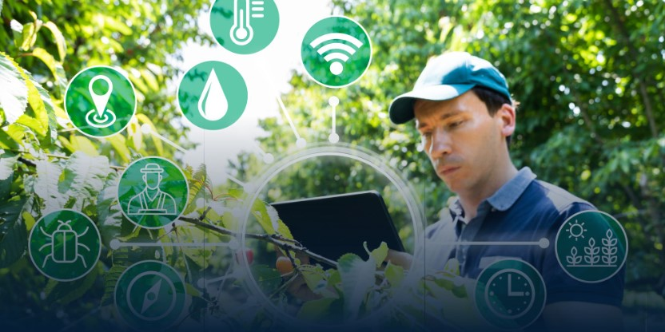
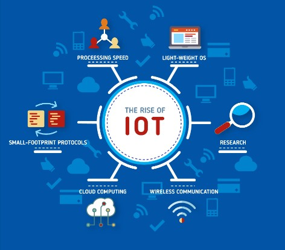
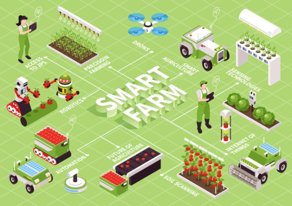

What is Smart Farming?

Smart farming adalah konsep pertanian yang menggunakan teknologi modern, termasuk Internet of Things (IoT),
kecerdasan buatan (AI), dan analitik data, untuk meningkatkan efisiensi, kualitas, dan
kuantitas produksi pertanian. Teknologi ini memungkinkan pemantauan real-time atas kondisi seperti kelembaban tanah,
cuaca, dan kesehatan tanaman, serta memberikan data untuk pengambilan keputusan yang lebih tepat

Dalam praktiknya, perangkat IoT mengumpulkan data dari sensor yang ditempatkan di ladang. Data ini diproses
menggunakan algoritma AI untuk mengoptimalkan irigasi, penggunaan pupuk, dan pengendalian hama, sehingga
sumber daya digunakan secara efisien. Selain itu, sistem cerdas ini dapat mengurangi biaya operasional dan
dampak lingkungan dengan cara yang berkelanjutan.

Menurut penelitian, adopsi smart farming dapat membantu menghadapi tantangan global seperti perubahan iklim,
kelangkaan sumber daya, dan kebutuhan pangan yang meningkat seiring dengan pertumbuhan populasi dunia.
Teknologi ini menciptakan solusi berbasis data untuk meningkatkan produktivitas sekaligus menjaga keberlanjutan
ekosistem pertanian.